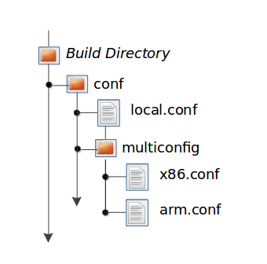

15 Building Images for Multiple Targets With Multiconfig
You can use a single bitbake command to build multiple images or
packages for different targets where each image or package requires a
different configuration (multiple configuration builds). The builds, in
this scenario, are sometimes referred to as "multiconfigs", and this
section uses that term throughout.
This section describes how to set up for multiple configuration builds and how to account for cross-build dependencies between the multiconfigs.
15.1 Setting Up and Running a Multiple Configuration Build
To accomplish a multiple configuration build, you must define each target's configuration separately using a parallel configuration file in the Build Directory or configuration directory within a layer, and you must follow a required file hierarchy. Additionally, you must enable the multiple configuration builds in your build/conf/local.conf file.
Follow these steps to set up and execute multiple configuration builds:
Create Separate Configuration Files: You need to create a single Configuration File for each build target (each multiconfig). The configuration definitions are implementation dependent but often each configuration file will define the MACHINE and the temporary directory (TMPDIR) BitBake uses for the build.
Nota
Whether the same temporary directory (TMPDIR) can be shared will depend on what is similar and what is different between the configurations. Multiple MACHINE targets can share the same TMPDIR as long as the rest of the configuration is the same, multiple DISTRO settings would need separate TMPDIR directories.
For example, consider a scenario with two different multiconfigs for the same MACHINE: "qemux86" built for two distributions such as "poky" and "poky-lsb". In this case, you would need to use two different TMPDIR.
In the general case, using separate TMPDIR for the different multiconfigs is strongly recommended.
The location for these multiconfig configuration files is specific. They must reside in the current Build Directory in a sub-directory of
confnamedmulticonfigor within a Layer'sconfdirectory under a directory namedmulticonfig. Here is an example that defines two configuration files for the "x86" and "arm" multiconfigs:
The usual BBPATH search path is used to locate multiconfig files in a similar way to other configuration files.
Here is an example showing the minimal statements needed in a configuration file named
qemux86.conffor aqemux86target whose temporary build directory istmp-qemux86:MACHINE = "qemux86" TMPDIR .= "-${BB_CURRENT_MC}"
BitBake will expand the BB_CURRENT_MC variable to the value of the current multiconfig in use. We append this value to TMPDIR so that any change on the definition of TMPDIR will automatically affect the value of TMPDIR for each multiconfig.
Add the BitBake Multi-configuration Variable to the Local Configuration File: Use the BBMULTICONFIG variable in your build/conf/local.conf configuration file to specify each multiconfig. Continuing with the example from the previous figure, the BBMULTICONFIG variable needs to enable two multiconfigs: "x86" and "arm" by specifying each configuration file:
BBMULTICONFIG = "x86 arm"
Nota
A "default" configuration already exists by definition. This configuration is named: "" (i.e. empty string) and is defined by the variables coming from your build/conf/local.conf file. Consequently, the previous example actually adds two additional configurations to your build: "arm" and "x86" along with "".
Launch BitBake: Use the following BitBake command form to launch the multiple configuration build:
$ bitbake [mc:multiconfigname:]target [[[mc:multiconfigname:]target] ... ]
For the example in this section, the following command applies:
$ bitbake mc:x86:core-image-minimal mc:arm:core-image-sato mc::core-image-base
The previous BitBake command builds several components:
A
core-image-minimalimage that is configured through thex86.confconfiguration fileA
core-image-satoimage that is configured through thearm.confconfiguration fileA
core-image-basethat is configured through your build/conf/local.conf configuration file

Nota
Support for multiple configuration builds in the Yocto Project 6.1 (Blacksail) Release does not include Shared State (sstate) optimizations. Consequently, if a build uses the same object twice in, for example, two different TMPDIR directories, the build either loads from an existing sstate cache for that build at the start or builds the object fresh.
15.2 Enabling Multiple Configuration Build Dependencies
Sometimes dependencies can exist between targets (multiconfigs) in a
multiple configuration build. For example, suppose that in order to
build a core-image-sato image for an "x86" multiconfig, the root
filesystem of an "arm" multiconfig must exist. This dependency is
essentially that the
do_image task in the
core-image-sato recipe depends on the completion of the
do_rootfs task of the
core-image-minimal recipe.
To enable dependencies in a multiple configuration build, you must declare the dependencies in the recipe using the following statement form:
task_or_package[mcdepends] = "mc:from_multiconfig:to_multiconfig:recipe_name:task_on_which_to_depend"
To better show how to use this statement, consider the example scenario
from the first paragraph of this section. The following statement needs
to be added to the recipe that builds the core-image-sato image:
do_image[mcdepends] = "mc:x86:arm:core-image-minimal:do_rootfs"
In this example, the from_multiconfig is "x86". The to_multiconfig is "arm". The
task on which the do_image task in the recipe depends is the
do_rootfs task from the core-image-minimal recipe associated
with the "arm" multiconfig.
Once you set up this dependency, you can build the "x86" multiconfig using a BitBake command as follows:
$ bitbake mc:x86:core-image-sato
This command executes all the tasks needed to create the
core-image-sato image for the "x86" multiconfig. Because of the
dependency, BitBake also executes through the do_rootfs task for the
"arm" multiconfig build.
Having a recipe depend on the root filesystem of another build might not
seem that useful. Consider this change to the statement in the
core-image-sato recipe:
do_image[mcdepends] = "mc:x86:arm:core-image-minimal:do_image"
In this case, BitBake must
create the core-image-minimal image for the "arm" build since the
"x86" build depends on it.
Because "x86" and "arm" are enabled for multiple configuration builds and have separate configuration files, BitBake places the artifacts for each build in the respective temporary build directories (i.e. TMPDIR).
15.3 Suggested best practices
TMPDIR (other than the default set in bitbake.conf) is only set in build/conf/local.conf by the user. This means that we should not manipulate TMPDIR in any way within the Machine or Distro configuration file.
A multiconfig should specify a TMPDIR, and should specify it by appending the multiconfig name with BB_CURRENT_MC.
Recipes that are used to transfer the output from a multiconfig build to another should use
do_task[mcdepends]to trigger the build of the component, and then transfer the item to the current configuration in do_install and do_deploy, assuming the value of the deployed item based on TMPDIR.The do_install and do_deploy tasks should look like this:
do_install() { install -m 0644 ${TMPDIR}-<multiconfig>/tmp/deploy/images/<machine>/somefile ${D}/some/path } do_deploy() { install -m 0644 ${TMPDIR}-<multiconfig>/tmp/deploy/images/<machine>/somefile ${DEPLOYDIR}/somefile }In the example above:
<multiconfig>is the multiconfig name as set by the multiconfig configuration file (see the Setting Up and Running a Multiple Configuration Build section above).<machine>must be the MACHINE for whichsomefilewas built and deployed. This value may differ from the current MACHINE if the multiconfig configuration file overrides it.
Firmware recipes can set the INHIBIT_DEFAULT_DEPS variable to
1if they don't rely on default dependencies such as the standard C library.
15.4 Common use case: building baremetal firmware alongside a Linux build
A common use case for multiconfig is to use the default configuration as the regular Linux build, while one or more multiconfigs can be used to build special components, such as baremetal firmware. It would also apply to a scenario where a microcontroller, for example, is companion to a main processor where Linux is running. This section details how one can achieve these kinds of scenarios with a multiconfig build.
15.4.1 Adding a multiconfig configuration file and recipe for a baremetal firmware
As described in Setting Up and Running a Multiple Configuration Build, each multiconfig will require a separate Configuration File. In addition, we will define a separate TMPDIR for our baremetal firmware build configuration.
For example, we will define a new conf/multiconfig/baremetal-firmware.conf
as follows:
TMPDIR .= "-${BB_CURRENT_MC}"
TCLIBC = "newlib"
The baremetal-firmware.conf file configures a separate TMPDIR for
holding binaries compiled with the newlib
toolchain (see TCLIBC).
Nota
Here, the default MACHINE is not overridden by the multiconfig configuration file. As a consequence, the architecture of the built baremetal binaries will be the same. In other cases, where the firmware runs on a completely different architecture, the MACHINE must be overridden.
We then create a recipe my-firmware.bb that defines how the baremetal
firmware is built. The recipe should contain enough information for the
OpenEmbedded build system to properly compile the firmware with our
toolchain. The building tasks may vary depending on the nature of the firmware.
However, the recipe should define a deploy task that deploys
the output into the DEPLOYDIR directory. We will consider in the
following that the file is named my-firmware.elf.
15.4.2 Building the firmware
The firmware can be built with BitBake with the following command:
$ bitbake mc:baremetal-firmware:my-firmware
However, we would prefer for my-firmware to be automatically built when
triggering a normal Linux build.
Using a mcdepend, a recipe belonging to the Linux build can trigger the
build of my-firmware. For example, let's consider that our Linux build needs
to assemble a "special" firmware that uses the output of our my-firmware
recipe - let's call it my-parent-firmware.bb. Then, we should specify this
dependency in my-parent-firmware.bb with:
do_compile[mcdepends] = "mc::baremetal-firmware:my-firmware:do_deploy"
The above will ensure that when the do_compile task of
my-parent-firmware is triggered, the do_deploy task of
my-firmware will already have run successfully.
15.4.3 Using the output of my-firmware
After my-firmware recipe has deployed my-firmware.elf, we need to use
the output in some way. We can make a series of assumptions, based on the
default Yocto Project variables in order to get the binary for packaging.
First, we can set the following in my-parent-firmware.bb:
FIRMWARE_FILE ??= "${TMPDIR}-baremetal-firmware/deploy/images/<machine>/my-firmware.elf"
FIRMWARE_FILE[vardepsexclude] += "TMPDIR"
The first assignment stores the value of the path to the firmware built and
deployed by the my-firmware.bb recipe. The second assignment excludes the
TMPDIR variable from being part of FIRMWARE_FILE's dependencies ---
meaning that changing the value of TMPDIR (for example, changing the
host on which the firmware is built) will not invalidate the shared state
cache.
Additionally, <machine> should be replaced by the MACHINE for which
we are building in the baremetal-firmware context.
We can then add a do_install task to my-parent-firmware:
do_install() {
install -Dm 0644 ${FIRMWARE_FILE} ${D}/lib/firmware/my-firmware.elf
}
Doing the above will allow the firmware binary to be transferred and packaged into the Linux context and rootfs.